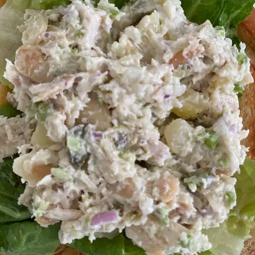

Chicken Salad

Description
Everyone needs a good, basic chicken salad recipe in their collection of fool-proof dishes.
Homemade chicken salad is quick and easy to make with just a handful of everyday ingredients,
and is perfect for warm weather picnics, potlucks, lunches, or light dinners.
You can add or substitute chicken salad ingredients to suit your preferences,
and it's genius at using up leftovers. I'll show you how to make tasty chicken salad using
this top-rated recipe for Basic Chicken Salad, and share plenty of tips and ideas along the way.
This recipe for homemade chicken salad uses six simple ingredients and takes only 10 minutes
to make from start to finish. After that, you can serve it up on salad greens, scoop it into
pita bread or half an avocado, roll it up in a tortilla for a wrap, or serve it hot in a
quesadilla or chicken melt.
Ingredients
-
Chicken: You'll need cooked chicken, chopped or shredded.
If you have leftover roast chicken, grilled chicken, or rotisserie chicken,
chicken salad is a great way to use it all up. You can also use canned chicken
to make chicken salad (drain it first), or you can cook chicken for chicken salad.
Use white or dark meat, or a combination of both if you prefer.
-
Mayonnaise: Creamy mayonnaise binds together all the separate
ingredients for chicken salad into a satisfying mixture of flavors and textures.
Use your choice of regular or reduced fat mayonnaise. In this chicken salad recipe,
the mayonnaise is enhanced with a tablespoon of lemon juice for brightness and a
¼ teaspoon of ground black pepper. Taste the dressing before mixing it with the chicken;
you may find it needs a little salt or other flavor-booster from your spice collection.
-
Celery: Fresh, crisp celery adds both flavor and crunch.
Be sure to chop the celery into small, uniform pieces so it's easier to eat.
-
Almonds: Here's the secret ingredient that makes this chicken
salad recipe stand apart. Blanched slivered almonds (available at any grocery
store) are quickly pan-toasted to bring out their nutty flavor, and then added
to the chicken salad mixture.
Steps
- Gather all ingredients.
- Place almonds in a frying pan. Toast over medium-high heat, shaking frequently.
Watch carefully, as they burn easily.
- Mix together mayonnaise, lemon juice, and pepper in a medium bowl.
- Toss with chicken, toasted almonds, and celery.
- Enjoy!